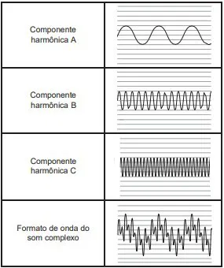

Enem (2022)Um pai faz um balanço utilizando dois segmentos paralelos e iguais da mesma corda para fixar uma tábua a uma barra horizontal. Por segurança, opta por um tipo de corda cuja tensão de ruptura seja 25% superior à tensão máxima calculada nas seguintes condições:
(Enem/2022)Uma lanterna funciona com três pilhas de resistência interna igual a 0,5 Ω cada, ligadas em série. Quando posicionadas corretamente, devem acender a lâmpada incandescente de especificações 4,5 W e 4,5 V. Cada pilha na posição correta gera uma f.e.m. (força eletromotriz) de 1,5V. Uma pessoa ao trocar as pilhas da lanterna, comete o equivoco de inverter a posição de uma das pilhas. Considere que as pilhas mantêm contato independentemente da posição.
(Enem/2022)As notas musicais, assim como a grande maioria dos sons encontrados na natureza, são complexas e formadas pela superposição de várias ondas senoidais. A figura apresenta três componentes harmônicas e a composição resultante, construídas na mesma escala, para um instrumento sonoro. Essa composição carrega uma “assinatura sônica” ou timbre do corpo que a produz.

Essas componentes harmônicas apresentam iguais
(Enem/2021)Em um manual de instruções de uma geladeira, constam as seguintes recomendações:
• Mantenha a porta de seu refrigerador aberta apenas o tempo necessário;